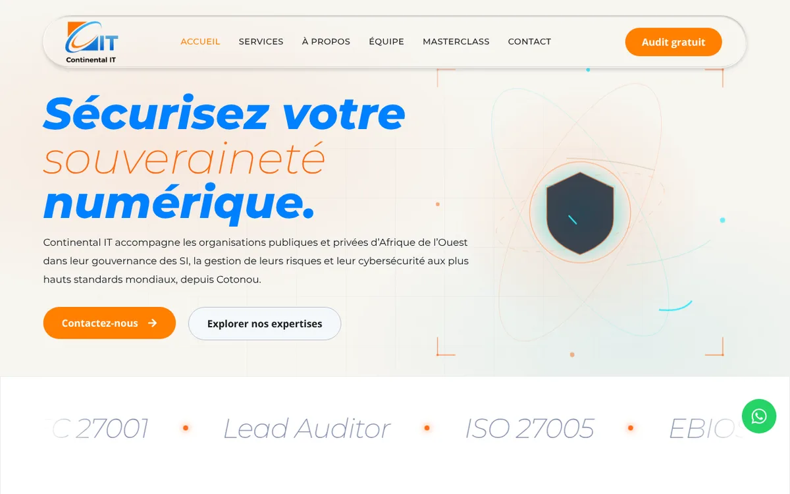

Continental IT, le site d'un cabinet de cybersécurité à Cotonou
Le site d'un cabinet de cybersécurité à Cotonou : six pôles d'expertise, masterclasses et demande d'audit, en ligne sur continentalit.org.

Contexte
Continental IT est un cabinet basé à Cotonou (Bénin) qui accompagne les organisations publiques et privées d'Afrique de l'Ouest en gouvernance des systèmes d'information, gestion des risques et cybersécurité (ISO/IEC 27001, EBIOS RM, formations certifiantes PECB).
Problème
Le cabinet devait présenter en ligne ses six pôles d'expertise, ses certifications et ses masterclasses en cybersécurité, et permettre aux visiteurs de le contacter ou de demander un audit gratuit.
Ce que j'ai fait
- Création et enrichissement du site vitrine sous WordPress et Elementor
- Animations d'en-tête et effets au survol
- Pages de services et système de boutons
- Contenus des masterclasses et corrections éditoriales
Résultat
Le site est officiellement en ligne sur continentalit.org : accueil, services, à propos, équipe, masterclasses, contact et demande d'audit gratuit.